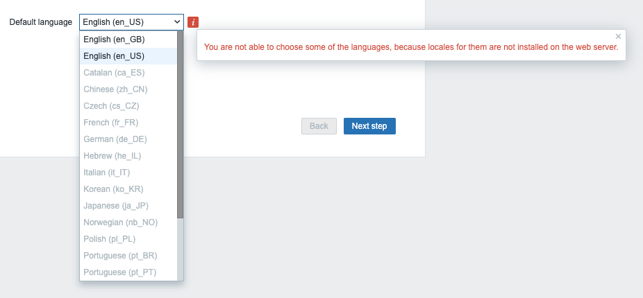
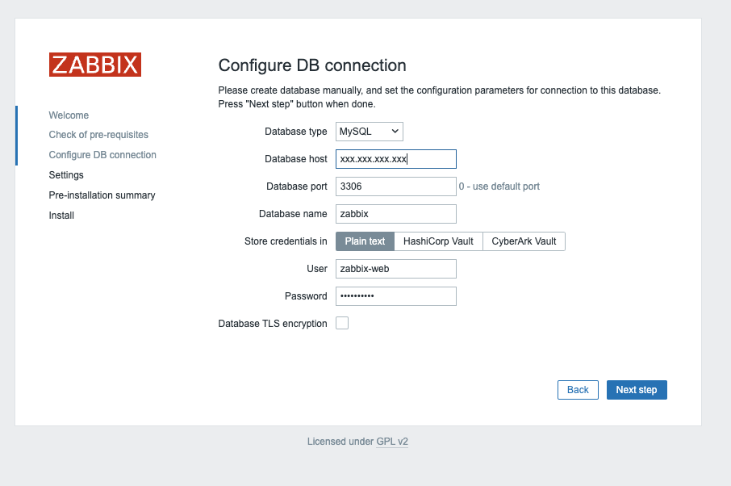
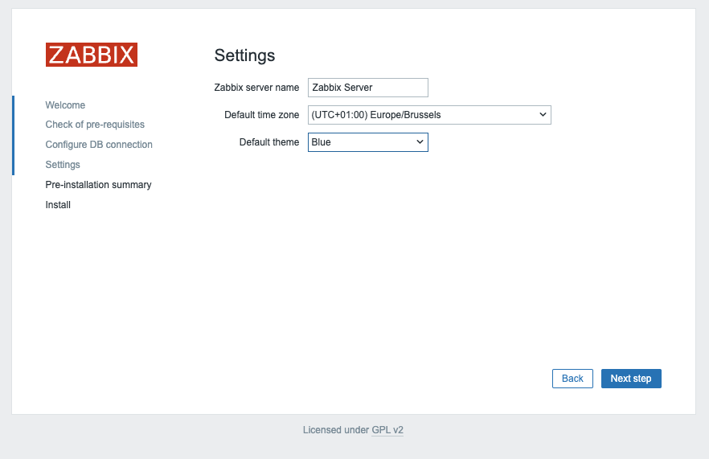

Установка Zabbix¶
В этой главе мы рассмотрим установку нашего сервера Zabbix. В предыдущей теме мы уже установили БД, теперь посмотрим, как установить сервер Zabbix и подключить его к нашей базе данных. Мы также рассмотрим возможные варианты дизайна, поскольку Zabbix можно устанавливать модульно.
Прежде чем устанавливать Zabbix, мы должны знать, как устроен сервер. Сервер Zabbix построен по модульному принципу на основе 3 компонентов.
- Сервер Zabbix
- Веб-сервер Zabbix
- База данных Zabbix

Все эти компоненты могут быть установлены на одном сервере или разделены на 3 разных сервера. Сам сервер Zabbix - это мозг, выполняющий все расчеты триггеров и отправляющий все оповещения. База данных - это место, где сервер Zabbix хранит свою конфигурацию и все данные, которые мы собрали. Веб-сервер предоставляет нам внешний интерфейс. Обратите внимание, что у Zabbix есть API, и он также находится на фронтенде, а не на стороне сервера Zabbix.
Все эти части должны работать вместе, как вы можете видеть на изображении выше. Сервер Zabbix должен считывать конфигурацию и хранить данные в базе данных, а внешний модуль Zabbix должен иметь возможность записывать конфигурацию в базу данных. Внешний модуль Zabbix также должен проверять онлайн-статус нашего сервера Zabbix и считывать некоторую другую информацию.
Для нашей установки мы будем использовать 2 ВМ, одну ВМ с сервером Zabbix и нашим веб-сервером Zabbix, а другую ВМ с нашей базой данных Zabbix.
В этой главе мы рассмотрим, как :
- Установить сервер Zabbix для MySQL/MariaDB
- Установить сервер Zabbix для PostgreSQL
- Установить фронтенд Zabbix с помощью NginX
- Установить фронтенд Zabbix с помощью Apache
Установка сервера Zabbix¶
Прежде чем приступить к установке сервера Zabbix, убедитесь, что сервер правильно настроен, как объяснялось в теме Базовая настройка ОС перед началом работы.
В данном случае важно отключить SELinux. Как правильно это сделать, мы увидим позже в главе Securing Zabbix with SELinux.
Мы можем проверить состояние SELinux с помощью команды estatus:
# sestatus
SELinux status: enabled
SELinuxfs mount: /sys/fs/selinux
SELinux root directory: /etc/selinux
Loaded policy name: targeted
Current mode: enforcing
Mode from config file: enforcing
Policy MLS status: enabled
Policy deny_unknown status: allowed
Memory protection checking: actual (secure)
Max kernel policy version: 33
Как вы видите, сейчас мы находимся в режиме принудительного выполнения.
Чтобы отключить SELinux, просто выполните команду setenforce 0, чтобы отключить его.
# setenforce 0
# sestatus
SELinux status: enabled
SELinuxfs mount: /sys/fs/selinux
SELinux root directory: /etc/selinux
Loaded policy name: targeted
Current mode: permissive
Mode from config file: enforcing
Policy MLS status: enabled
Policy deny_unknown status: allowed
Memory protection checking: actual (secure)
Max kernel policy version: 33
Как вы можете видеть, наш текущий режим теперь разрешающий.
Однако он не является постоянным, поэтому также необходимо изменить конфигурационный файл SELinux. Это можно сделать, изменив файл /etc/config/selinux и заменив enforcing на permissive.
Более простой способ - выполнить следующую команду :
sed -i 's/SELINUX=enforcing/SELINUX=permissive/g' /etc/selinux/config
Эта строка изменит файл конфигурации. Таким образом, когда мы снова запустим estatus, то увидим, что находимся в режиме permissive и наш конфигурационный файл также находится в режиме permissive.
Мы можем проверить это с помощью команды cat.
# cat /etc/selinux/config
# This file controls the state of SELinux on the system.
# SELINUX= can take one of these three values:
# enforcing - SELinux security policy is enforced.
# permissive - SELinux prints warnings instead of enforcing.
# disabled - No SELinux policy is loaded.
# See also:
# https://docs.fedoraproject.org/en-US/quick-docs/getting-started-with-selinux/#getting-started-with-selinux-selinux-states-and-modes
#
# NOTE: In earlier Fedora kernel builds, SELINUX=disabled would also
# fully disable SELinux during boot. If you need a system with SELinux
# fully disabled instead of SELinux running with no policy loaded, you
# need to pass selinux=0 to the kernel command line. You can use grubby
# to persistently set the bootloader to boot with selinux=0:
#
# grubby --update-kernel ALL --args selinux=0
#
# To revert back to SELinux enabled:
#
# grubby --update-kernel ALL --remove-args selinux
#
SELINUX=permissive
# SELINUXTYPE= can take one of these three values:
# targeted - Targeted processes are protected,
# minimum - Modification of targeted policy. Only selected processes are protected.
# mls - Multi Level Security protection.
SELINUXTYPE=targeted
И мы также можем проверить это с помощью нашей команды setstatus.
# sestatus
SELinux status: enabled
SELinuxfs mount: /sys/fs/selinux
SELinux root directory: /etc/selinux
Loaded policy name: targeted
Current mode: permissive
Mode from config file: permissive
Policy MLS status: enabled
Policy deny_unknown status: allowed
Memory protection checking: actual (secure)
Max kernel policy version: 33
Добавление репозитория Zabbix¶
На странице Zabbix Download page выберите нужную версию Zabbix, которую хотите установить. В нашем случае это будет 7.0 LTS. Также выберите нужный дистрибутив ОС. В нашем случае это будет Rocky Linux 9. Мы собираемся установить сервер и будем использовать NGINX.

Первым шагом будет отключение пакетов Zabbix, предоставляемых EPEL, если он у вас установлен. Отредактируйте файл /etc/yum.repos.d/epel.repo и добавьте следующее утверждение.
[epel]
...
excludepkgs=zabbix*
Tip
Включенный репозиторий EPEL - это плохая практика, которая может быть опасна, при его использовании. Лучше отключить репозиторий и использовать dnf install
Наша следующая задача - установить репозиторий Zabbix на нашу ОС и выполнить очистку dnf, чтобы старые кэш-файлы метаданных нашего репозитория были очищены.
rpm -Uvh https://repo.zabbix.com/zabbix/7.0/rhel/9/x86_64/zabbix-release-6.5-2.el9.noarch.rpm
dnf clean all
Note
Репозиторий - это конфигурация в Linux, которую вы можете добавить, чтобы сделать пакеты доступными для установки в вашей ОС. Лучше всего рассматривать его как магазин приложений, в котором можно найти программное обеспечение вашего разработчика. В данном случае это репозиторий Zabbix. Существует множество репозиториев, которые вы можете добавить, но вы должны быть уверены, что им можно доверять. Поэтому всегда стоит придерживаться репозиториев вашей ОС и добавлять дополнительные только тогда, когда вы уверены, что им можно доверять и они необходимы. В нашем случае это репозиторий от нашего разработчика Zabbix, поэтому его можно смело добавлять. Epel - еще один популярный репозиторий для систем RedHat, который считается безопасным.
Установка сервера Zabbix для MySQL/MariaDB¶
Теперь, когда репозиторий с программным обеспечением добавлен в нашу систему, мы готовы установить сервер Zabbix и веб-сервер. Помните, что веб-сервер может быть установлен на другой системе. Нет необходимости устанавливать их на одном сервере.
dnf install zabbix-server-mysql zabbix-web-mysql
Теперь, когда мы установили пакеты для сервера Zabbix и фронтенда, нам нужно изменить конфигурацию сервера Zabbix, чтобы мы могли подключиться к нашей базе данных. Откройте файл /etc/zabbix/zabbix_server.conf и замените следующие строки:
DBHost=<ip or dns of your MariaDB server>
DBName=<the name of your database>
DBUser=<the user that will connect to the database>
DBPassword=<your super secret password>
Убедитесь, что перед параметром config нет символа '#', иначе Zabbix будет воспринимать его как текст, а не как параметр. Также убедитесь, что нет лишних дублирующихся строк. Zabbix всегда будет брать последний параметр конфигурации, если есть более 1 строки с одним и тем же параметром.
В нашем случае конфигурация будет выглядеть следующим образом:
# vi /etc/zabbix/zabbix_server.conf
DBHost=<ip or dns of your MariaDB server>
DBName=zabbix
DBUser=zabbix-srv
DBPassword=<your super secret password>
DBPort=3306
Note
В конфигурационном файле сервера Zabbix есть возможность включить дополнительный файл конфигурации с параметрами, которые вы можете изменить или добавить. В продакшене, вероятно, лучше не трогать конфигурационный файл, а добавить новый файл и включить в него параметры, которые вы хотите изменить. Таким образом, вам никогда не придется редактировать исходный конфигурационный файл после обновления. Это также облегчит вам жизнь при работе с такими инструментами конфигурирования, как Ansible, Puppet, SaltStack, ..... Единственное, что нужно сделать, это убрать символ # перед строкой '# Include=/usr/local/etc/zabbix_server.conf.d/*.conf' и убедиться, что путь с настроенным конфигурационным файлом, который может быть прочитан пользователем zabbix, существует.
Теперь, когда мы изменили конфигурацию вашего сервера Zabbix так, чтобы он мог подключаться к нашей БД, мы готовы приступить к работе. Выполните следующую команду, чтобы включить сервер Zabbix и сделать его активным при следующей загрузке.
systemctl enable zabbix-server --now
Наша служба сервера Zabbix запустится, и если все прошло успешно, то мы должны увидеть в файле журнала сервера Zabbix следующий вывод
tail /var/log/zabbix/zabbix_server.log
1123:20231120:110604.440 Starting Zabbix Server. Zabbix 7.0.0alpha7 (revision 60de6a81aca).
1123:20231120:110604.440 ****** Enabled features ******
1123:20231120:110604.440 SNMP monitoring: YES
1123:20231120:110604.440 IPMI monitoring: YES
1123:20231120:110604.440 Web monitoring: YES
1123:20231120:110604.440 VMware monitoring: YES
1123:20231120:110604.440 SMTP authentication: YES
1123:20231120:110604.440 ODBC: YES
1123:20231120:110604.440 SSH support: YES
1123:20231120:110604.440 IPv6 support: YES
1123:20231120:110604.440 TLS support: YES
1123:20231120:110604.440 ******************************
1123:20231120:110604.440 using configuration file: /etc/zabbix/zabbix_server.conf
1123:20231120:110604.470 current database version (mandatory/optional): 06050143/06050143
1123:20231120:110604.470 required mandatory version: 06050143
1124:20231120:110604.490 starting HA manager
1124:20231120:110604.507 HA manager started in active mode
1123:20231120:110604.508 server #0 started [main process]
1126:20231120:110604.509 server #2 started [configuration syncer #1]
1125:20231120:110604.510 server #1 started [service manager #1]
1133:20231120:110604.841 server #9 started [lld worker #1]
1132:20231120:110604.841 server #8 started [lld manager #1]
1134:20231120:110604.841 server #10 started [lld worker #2]
Если произошла ошибка и сервер не смог подключиться к базе данных, то в файле журнала сервера вы увидите что-то вроде этого:
10773:20231118:213248.570 Starting Zabbix Server. Zabbix 7.0.0alpha7 (revision 60de6a81aca).
10773:20231118:213248.570 ****** Enabled features ******
10773:20231118:213248.570 SNMP monitoring: YES
10773:20231118:213248.570 IPMI monitoring: YES
10773:20231118:213248.570 Web monitoring: YES
10773:20231118:213248.570 VMware monitoring: YES
10773:20231118:213248.570 SMTP authentication: YES
10773:20231118:213248.570 ODBC: YES
10773:20231118:213248.570 SSH support: YES
10773:20231118:213248.570 IPv6 support: YES
10773:20231118:213248.570 TLS support: YES
10773:20231118:213248.570 ******************************
10773:20231118:213248.570 using configuration file: /etc/zabbix/zabbix_server.conf
10773:20231118:213248.574 [Z3001] connection to database 'zabbix' failed: [2002] Can't connect to server on 'xxx.xxx.xxx.xxx' (115)
10773:20231118:213248.574 database is down: reconnecting in 10 seconds
10773:20231118:213258.579 [Z3001] connection to database 'zabbix' failed: [2002] Can't connect to server on 'xxx.xxx.xxx.xxx' (115)
10773:20231118:213258.579 database is down: reconnecting in 10 seconds
Давайте проверим службу сервера Zabbix, чтобы убедиться, что она включена и переживет перезагрузку.
# systemctl status zabbix-server
● zabbix-server.service - Zabbix Server
Loaded: loaded (/usr/lib/systemd/system/zabbix-server.service; enabled; preset: disabled)
Active: active (running) since Mon 2023-11-20 11:06:04 CET; 1h 2min ago
Main PID: 1123 (zabbix_server)
Tasks: 59 (limit: 12344)
Memory: 52.6M
CPU: 20.399s
CGroup: /system.slice/zabbix-server.service
├─1123 /usr/sbin/zabbix_server -c /etc/zabbix/zabbix_server.conf
├─1124 "/usr/sbin/zabbix_server: ha manager"
├─1125 "/usr/sbin/zabbix_server: service manager #1 [processed 0 events, updated 0 event tags, deleted 0 problems, synced 0 service updates, idle 5.008686 sec during 5.016382 sec]"
├─1126 "/usr/sbin/zabbix_server: configuration syncer [synced configuration in 0.092797 sec, idle 10 sec]"
├─1127 "/usr/sbin/zabbix_server: alert manager #1 [sent 0, failed 0 alerts, idle 5.027620 sec during 5.027828 sec]"
├─1128 "/usr/sbin/zabbix_server: alerter #1 started"
├─1129 "/usr/sbin/zabbix_server: alerter #2 started"
├─1130 "/usr/sbin/zabbix_server: alerter #3 started"
├─1131 "/usr/sbin/zabbix_server: preprocessing manager #1 [queued 1, processed 2 values, idle 5.490312 sec during 5.490555 sec]"
├─1132 "/usr/sbin/zabbix_server: lld manager #1 [processed 1 LLD rules, idle 5.028973sec during 5.029123 sec]"
├─1133 "/usr/sbin/zabbix_server: lld worker #1 [processed 1 LLD rules, idle 60.060180 sec during 60.085009 sec]"
├─1134 "/usr/sbin/zabbix_server: lld worker #2 [processed 1 LLD rules, idle 60.065526 sec during 60.095165 sec]"
├─1135 "/usr/sbin/zabbix_server: housekeeper [deleted 0 hist/trends, 0 items/triggers, 0 events, 0 sessions, 0 alarms, 0 audit items, 0 autoreg_host, 0 records in 0.019108 sec, idle for 1 hour(s)]"
├─1136 "/usr/sbin/zabbix_server: timer #1 [updated 0 hosts, suppressed 0 events in 0.002856 sec, idle 59 sec]"
├─1137 "/usr/sbin/zabbix_server: http poller #1 [got 0 values in 0.000059 sec, idle 5 sec]"
├─1138 "/usr/sbin/zabbix_server: discovery manager #1 [processing 0 rules, 0.000000% of queue used, 0 unsaved checks]"
├─1139 "/usr/sbin/zabbix_server: history syncer #1 [processed 0 values, 0 triggers in 0.000036 sec, idle 1 sec]"
├─1140 "/usr/sbin/zabbix_server: history syncer #2 [processed 1 values, 0 triggers in 0.005016 sec, idle 1 sec]"
├─1141 "/usr/sbin/zabbix_server: history syncer #3 [processed 0 values, 0 triggers in 0.000031 sec, idle 1 sec]"
├─1142 "/usr/sbin/zabbix_server: history syncer #4 [processed 0 values, 0 triggers in 0.000014 sec, idle 1 sec]"
├─1143 "/usr/sbin/zabbix_server: escalator #1 [processed 0 escalations in 0.005587 sec, idle 3 sec]"
├─1144 "/usr/sbin/zabbix_server: proxy poller #1 [exchanged data with 0 proxies in 0.000010 sec, idle 5 sec]"
├─1145 "/usr/sbin/zabbix_server: self-monitoring [processed data in 0.000016 sec, idle 1 sec]"
├─1146 "/usr/sbin/zabbix_server: task manager [processed 0 task(s) in 0.002511 sec, idle 5 sec]"
├─1147 "/usr/sbin/zabbix_server: poller #1 [got 0 values in 0.000009 sec, idle 1 sec]"
├─1148 "/usr/sbin/zabbix_server: poller #2 [got 1 values in 0.000232 sec, idle 1 sec]"
├─1149 "/usr/sbin/zabbix_server: poller #3 [got 0 values in 0.000015 sec, idle 1 sec]"
├─1150 "/usr/sbin/zabbix_server: poller #4 [got 0 values in 0.000010 sec, idle 1 sec]"
На этом мы завершаем главу об установке и настройке сервера Zabbix. Далее нам нужно настроить наш фронтенд. Вы можете взглянуть на Установка фронтенда Zabbix с Nginx или Установка фронтенда Zabbix с Apache
Установка сервера Zabbix для PostgreSQL¶
Теперь, когда репозиторий с программным обеспечением добавлен в нашу систему, мы готовы установить сервер Zabbix и веб-сервер. Помните, что веб-сервер может быть установлен на другой системе. Нет необходимости устанавливать их на одном сервере.
dnf install zabbix-server-pgsql zabbix-web-pgsql
Теперь, когда мы установили пакеты для сервера Zabbix и фронтенда, нам нужно изменить конфигурацию сервера Zabbix, чтобы была возможность подключиться к нашей базе данных. Откройте файл /etc/zabbix/zabbix_server.conf и замените следующие строки:
DBHost=<ip или dns вашего сервера PostgreSQL>
DBName=<название базы данных>
DBSchema=<название вашей схемы PostgreSQL>
DBUser=<пользователь для подключения к базе данных>
DBPassword=<ваш суперсекретный пароль>
Убедитесь, что перед параметром config нет символа '#', иначе Zabbix будет воспринимать его как текст, а не как параметр. Также убедитесь, что нет лишних дублирующихся строк. Zabbix всегда будет брать последний параметр конфигурации, если есть более 1 строки с одним и тем же параметром.
В нашем случае конфигурация будет выглядеть следующим образом:
# vi /etc/zabbix/zabbix_server.conf
DBHost=<ip or dns of your MariaDB server>
DBName=zabbix
DBSchema=zabbix_server
DBUser=zabbix-srv
DBPassword=<your super secret password>
DBPort=5432
Note
В конфигурационном файле сервера Zabbix есть возможность включить дополнительный файл конфигурации с параметрами, которые вы можете изменить или добавить. В продакшене, вероятно, лучше не трогать конфигурационный файл, а добавить новый и включить в него параметры, которые вы захотите изменить. Таким образом, вам никогда не придется редактировать исходный конфигурационный файл после обновления. Это также облегчит вам жизнь при работе с такими инструментами конфигурирования, как Ansible, Puppet, SaltStack, ..... Единственное, что нужно сделать, это убрать символ # перед строкой '# Include=/usr/local/etc/zabbix_server.conf.d/*.conf' и убедиться, что путь с настроенным конфигурационным файлом, который может быть прочитан пользователем zabbix, существует.
Теперь, когда мы изменили конфигурацию нашего сервера Zabbix так, чтобы он мог подключаться к нашей БД, мы готовы приступить к работе. Выполните следующую команду, чтобы запустить сервер Zabbix и добавить его в автозагрузку.
systemctl enable zabbix-server --now
Наша служба сервера Zabbix запустится, и если все прошло успешно, вы должны увидеть в файле журнала сервера Zabbix следующий вывод
tail /var/log/zabbix/zabbix_server.log
1123:20231120:110604.440 Starting Zabbix Server. Zabbix 7.0.0alpha7 (revision 60de6a81aca).
1123:20231120:110604.440 ****** Enabled features ******
1123:20231120:110604.440 SNMP monitoring: YES
1123:20231120:110604.440 IPMI monitoring: YES
1123:20231120:110604.440 Web monitoring: YES
1123:20231120:110604.440 VMware monitoring: YES
1123:20231120:110604.440 SMTP authentication: YES
1123:20231120:110604.440 ODBC: YES
1123:20231120:110604.440 SSH support: YES
1123:20231120:110604.440 IPv6 support: YES
1123:20231120:110604.440 TLS support: YES
1123:20231120:110604.440 ******************************
1123:20231120:110604.440 using configuration file: /etc/zabbix/zabbix_server.conf
1123:20231120:110604.470 current database version (mandatory/optional): 06050143/06050143
1123:20231120:110604.470 required mandatory version: 06050143
1124:20231120:110604.490 starting HA manager
1124:20231120:110604.507 HA manager started in active mode
1123:20231120:110604.508 server #0 started [main process]
1126:20231120:110604.509 server #2 started [configuration syncer #1]
1125:20231120:110604.510 server #1 started [service manager #1]
1133:20231120:110604.841 server #9 started [lld worker #1]
1132:20231120:110604.841 server #8 started [lld manager #1]
1134:20231120:110604.841 server #10 started [lld worker #2]
Если произошла ошибка и сервер не смог подключиться к базе данных, то в файле журнала сервера вы увидите что-то вроде этого:
10773:20231118:213248.570 Starting Zabbix Server. Zabbix 7.0.0alpha7 (revision 60de6a81aca).
10773:20231118:213248.570 ****** Enabled features ******
10773:20231118:213248.570 SNMP monitoring: YES
10773:20231118:213248.570 IPMI monitoring: YES
10773:20231118:213248.570 Web monitoring: YES
10773:20231118:213248.570 VMware monitoring: YES
10773:20231118:213248.570 SMTP authentication: YES
10773:20231118:213248.570 ODBC: YES
10773:20231118:213248.570 SSH support: YES
10773:20231118:213248.570 IPv6 support: YES
10773:20231118:213248.570 TLS support: YES
10773:20231118:213248.570 ******************************
10773:20231118:213248.570 using configuration file: /etc/zabbix/zabbix_server.conf
10773:20231118:213248.574 [Z3001] connection to database 'zabbix' failed: [2002] Can't connect to server on 'xxx.xxx.xxx.xxx' (115)
10773:20231118:213248.574 database is down: reconnecting in 10 seconds
10773:20231118:213258.579 [Z3001] connection to database 'zabbix' failed: [2002] Can't connect to server on 'xxx.xxx.xxx.xxx' (115)
10773:20231118:213258.579 database is down: reconnecting in 10 seconds
Давайте проверим службу сервера Zabbix, чтобы убедиться, что она включена и переживет перезагрузку.
# systemctl status zabbix-server
● zabbix-server.service - Zabbix Server
Loaded: loaded (/usr/lib/systemd/system/zabbix-server.service; enabled; preset: disabled)
Active: active (running) since Mon 2023-11-20 11:06:04 CET; 1h 2min ago
Main PID: 1123 (zabbix_server)
Tasks: 59 (limit: 12344)
Memory: 52.6M
CPU: 20.399s
CGroup: /system.slice/zabbix-server.service
├─1123 /usr/sbin/zabbix_server -c /etc/zabbix/zabbix_server.conf
├─1124 "/usr/sbin/zabbix_server: ha manager"
├─1125 "/usr/sbin/zabbix_server: service manager #1 [processed 0 events, updated 0 event tags, deleted 0 problems, synced 0 service updates, idle 5.008686 sec during 5.016382 sec]"
├─1126 "/usr/sbin/zabbix_server: configuration syncer [synced configuration in 0.092797 sec, idle 10 sec]"
├─1127 "/usr/sbin/zabbix_server: alert manager #1 [sent 0, failed 0 alerts, idle 5.027620 sec during 5.027828 sec]"
├─1128 "/usr/sbin/zabbix_server: alerter #1 started"
├─1129 "/usr/sbin/zabbix_server: alerter #2 started"
├─1130 "/usr/sbin/zabbix_server: alerter #3 started"
├─1131 "/usr/sbin/zabbix_server: preprocessing manager #1 [queued 1, processed 2 values, idle 5.490312 sec during 5.490555 sec]"
├─1132 "/usr/sbin/zabbix_server: lld manager #1 [processed 1 LLD rules, idle 5.028973sec during 5.029123 sec]"
├─1133 "/usr/sbin/zabbix_server: lld worker #1 [processed 1 LLD rules, idle 60.060180 sec during 60.085009 sec]"
├─1134 "/usr/sbin/zabbix_server: lld worker #2 [processed 1 LLD rules, idle 60.065526 sec during 60.095165 sec]"
├─1135 "/usr/sbin/zabbix_server: housekeeper [deleted 0 hist/trends, 0 items/triggers, 0 events, 0 sessions, 0 alarms, 0 audit items, 0 autoreg_host, 0 records in 0.019108 sec, idle for 1 hour(s)]"
├─1136 "/usr/sbin/zabbix_server: timer #1 [updated 0 hosts, suppressed 0 events in 0.002856 sec, idle 59 sec]"
├─1137 "/usr/sbin/zabbix_server: http poller #1 [got 0 values in 0.000059 sec, idle 5 sec]"
├─1138 "/usr/sbin/zabbix_server: discovery manager #1 [processing 0 rules, 0.000000% of queue used, 0 unsaved checks]"
├─1139 "/usr/sbin/zabbix_server: history syncer #1 [processed 0 values, 0 triggers in 0.000036 sec, idle 1 sec]"
├─1140 "/usr/sbin/zabbix_server: history syncer #2 [processed 1 values, 0 triggers in 0.005016 sec, idle 1 sec]"
├─1141 "/usr/sbin/zabbix_server: history syncer #3 [processed 0 values, 0 triggers in 0.000031 sec, idle 1 sec]"
├─1142 "/usr/sbin/zabbix_server: history syncer #4 [processed 0 values, 0 triggers in 0.000014 sec, idle 1 sec]"
├─1143 "/usr/sbin/zabbix_server: escalator #1 [processed 0 escalations in 0.005587 sec, idle 3 sec]"
├─1144 "/usr/sbin/zabbix_server: proxy poller #1 [exchanged data with 0 proxies in 0.000010 sec, idle 5 sec]"
├─1145 "/usr/sbin/zabbix_server: self-monitoring [processed data in 0.000016 sec, idle 1 sec]"
├─1146 "/usr/sbin/zabbix_server: task manager [processed 0 task(s) in 0.002511 sec, idle 5 sec]"
├─1147 "/usr/sbin/zabbix_server: poller #1 [got 0 values in 0.000009 sec, idle 1 sec]"
├─1148 "/usr/sbin/zabbix_server: poller #2 [got 1 values in 0.000232 sec, idle 1 sec]"
├─1149 "/usr/sbin/zabbix_server: poller #3 [got 0 values in 0.000015 sec, idle 1 sec]"
├─1150 "/usr/sbin/zabbix_server: poller #4 [got 0 values in 0.000010 sec, idle 1 sec]"
На этом мы завершаем главу об установке и настройке сервера Zabbix. Далее нам нужно настроить наш фронтенд. Вы можете взглянуть на Установка фронтенда Zabbix с Nginx или Установка фронтенда Zabbix с Apache
Установка фронтента Zabbix с Nginx¶
Прежде чем мы сможем настроить наш фронтенд, нам нужно сначала установить пакет. Если вы запускаете фронтенд на том же сервере, что и сервер Zabbix, то вам больше ничего не нужно делать, вы можете просто выполнить следующую команду на своем сервере, чтобы установить пакеты, необходимые для установки нашего фронтенда:
dnf install zabbix-nginx-conf и zabbix-web-mysql или если используете Postgres dnf install zabbix-web-pgsql
Если фронтенд установлен на другом сервере, то нужно сначала добавить репозиторий Zabbix, как мы это сделали на нашем сервере Zabbix. Если вы забыли или просто пропустили эту тему и не знаете, как это сделать, посмотрите Добавление репозитория Zabbix.
Первое, что нам нужно сделать, это изменить конфигурационный файл Nginx, чтобы не использовать стандартный конфиг.
vi /etc/nginx/nginx.conf
В этой конфигурации ищите следующий блок, начинающийся с:
server {
listen 80;
listen [::]:80;
server_name _;
root /usr/share/nginx/html;
# Load configuration files for the default server block.
include /etc/nginx/default.d/*.conf;
И поместите следующие строки в комментарий:
server {
# listen 80;
# listen [::]:80;
# server_name _;
# root /usr/share/nginx/html;
Теперь нам нужно изменить файл конфигурации Zabbix так, чтобы он соответствовал нашей установке. Отредактируйте следующий файл:
vi /etc/nginx/conf.d/zabbix.conf
server {
listen 8080;
server_name example.com;
root /usr/share/zabbix;
index index.php;
Замените первые 2 строки на правильный порт и домен для вашего фронтенда, если у вас нет домена, то можете заменить server_name на _;, как в примере ниже:
server {
# listen 8080;
# server_name example.com;
listen 80;
server_name _;
root /usr/share/zabbix;
index index.php;
Теперь мы готовы запустить наш веб-север и включить его так, чтобы он выходил в сеть после перезагрузки.
systemctl enable php-fpm --now
systemctl enable nginx --now
Давайте проверим, правильно ли запущена и включена служба (добавлена в автозапуск), чтобы она пережила нашу перезагрузку в следующий раз.
# systemctl status nginx
● nginx.service - The nginx HTTP and reverse proxy server
Loaded: loaded (/usr/lib/systemd/system/nginx.service; enabled; preset: disabled)
Drop-In: /usr/lib/systemd/system/nginx.service.d
└─php-fpm.conf
Active: active (running) since Mon 2023-11-20 11:42:18 CET; 30min ago
Main PID: 1206 (nginx)
Tasks: 2 (limit: 12344)
Memory: 4.8M
CPU: 38ms
CGroup: /system.slice/nginx.service
├─1206 "nginx: master process /usr/sbin/nginx"
└─1207 "nginx: worker process"
Nov 20 11:42:18 zabbix-srv systemd[1]: Starting The nginx HTTP and reverse proxy server...
Nov 20 11:42:18 zabbix-srv nginx[1204]: nginx: the configuration file /etc/nginx/nginx.conf syntax is ok
Nov 20 11:42:18 zabbix-srv nginx[1204]: nginx: configuration file /etc/nginx/nginx.conf test is successful
Nov 20 11:42:18 zabbix-srv systemd[1]: Started The nginx HTTP and reverse proxy server.
Служба запущена и добавлена в автозапуск, поэтому осталось сделать только одну вещь, прежде чем мы сможем начать настройку в графическом интерфейсе, а именно настроить наш брандмауэр на разрешение входящего соединения с веб-сервером.
firewall-cmd --add-service=http --permanent
firewall-cmd --reload
Откройте браузер и перейдите по url или ip вашего фронтенда:
http://<ip или dns вашего фронтента сервера zabbix>/
Если все прошло успешно, вас должна встретить страница приветствия Zabbix. В случае возникновения ошибки проверьте конфигурацию еще раз или посмотрите файл журнала nginx:
/var/log/nginx/error.log
или запустите
journalctl -xe
Это поможет вам найти ошибки, которые вы допустили.
Когда вы зайдете браузером по правильному URL, перед вами должна появиться страница, как здесь:

Как видите, во фронтенде Zabbix доступен лишь ограниченный список местных переводов, из которых можно выбирать

Что если мы хотим установить китайский язык или другой язык из списка? Выполните следующую команду для получения списка всех локалей, доступных для вашей ОС.
dnf list glibc-langpack-*
В результате вы получите список вроде этого:
Installed Packages
glibc-langpack-en.x86_64
Available Packages
glibc-langpack-aa.x86_64
...
glibc-langpack-zu.x86_64
Давайте поищем нашу китайскую локаль и посмотрим, доступна ли она. Как вы можете видеть, код начинается с zh
# dnf list glibc-langpack-* | grep zh
glibc-langpack-zh.x86_64
glibc-langpack-lzh.x86_64
Команда возвращает нам 2 строки, но так как мы видели, что код был zh_CN, нам нужно установить только первый пакет.
# dnf install glibc-langpack-zh.x86_64 -y
Вернувшись во фронтенд, мы можем выбрать китайский язык.

Note
Если ваш язык недоступен во фронтенде, не паникуйте - это значит, что перевода нет или он не был выполнен на 100%. Zabbix бесплатен и полагается на сообщество в своих переводах, поэтому вы можете помочь в создании перевода. Перейдите на страницу https://translate.zabbix.com/ и помогите нам сделать Zabbix лучше. Как только перевод будет завершен, в следующую версию минорного патча Zabbix будет включен ваш язык.
Нажмите «Далее», если вас устраивают доступные транзакции. Вы попадете на экран, где нужно проверить, выполнены ли все предварительные условия. Если нет, сначала исправьте их, но в норме все должно быть в порядке, и вы сможете просто нажать кнопку Далее.

На следующей странице вы увидите страницу с параметрами подключения к нашей базе данных.
Сначала выбираете тип БД 'MySQL' или 'PostgreSQL' и заполняете IP или DNS имя местонахождения вашего сервера базы данных. Используйте порт 3306 для MariaDB/MySQL или 5432, если используете PostgreSQL.
Введите правильное имя базы данных, в нашем случае это zabbix.
Если вы используете PostgreSQL, то вам также нужно ввести правильное имя схемы, в нашем случае это zabbix_server.
Следующая строка попросит вас ввести пользователей БД, здесь мы создали пользователя zabbix-web. Введите его в нужное поле и заполните пароль, который вы использовали для этого пользователя.
Убедитесь, что опция Database TLS encryption не выбрана и нажмите Next step.

Мы почти у цели. Осталось только дать нашему экземпляру имя, выбрать часовой пояс и время по умолчанию, которое мы хотим использовать.

Нажмите Next Step еще раз, и увидите страницу, сообщающую об успешном завершении настройки.
Нажмите Finish, чтобы завершить конфигурацию.

Теперь мы готовы ко входу в систему:

Login : Admin Password : zabbix
Если вы хотите защитить фронтенд с помощью SSL, ознакомьтесь со следующей темой
Установка фронтента Zabbix с Apache¶
Прежде чем мы сможем настроить наш фронтенд, нам нужно сначала установить пакет. Если вы запускаете фронтенд на том же сервере, что и сервер Zabbix, то вам больше ничего не нужно делать, вы можете просто выполнить следующую команду на своем сервере для установки пакетов, необходимых для установки нашего фронтенда:
dnf install zabbix-apache-conf and zabbix-web-mysql or if you used Postgres dnf install zabbix-web-pgsql
Если фронтенд установлен на другом сервере, то нужно сначала добавить репозиторий Zabbix, как мы это сделали на нашем сервере Zabbix. Если вы забыли или просто пропустили эту тему и не знаете, как это сделать, посмотрите Добавление репозитория Zabbix.
Теперь мы готовы запустить наш веб-север и добавить его в автозагрузку.
systemctl enable php-fpm --now
systemctl enable httpd --now
Давайте проверим, правильно ли запущена и включена служба (добавлена в автозагрузку), чтобы она пережила нашу перезагрузку в следующий раз.
# systemctl status httpd
● httpd.service - The Apache HTTP Server
Loaded: loaded (/usr/lib/systemd/system/httpd.service; enabled; preset: disabled)
Drop-In: /usr/lib/systemd/system/httpd.service.d
└─php-fpm.conf
Active: active (running) since Mon 2024-03-04 08:50:17 CET; 7min ago
Docs: man:httpd.service(8)
Main PID: 690 (httpd)
Status: "Total requests: 96; Idle/Busy workers 100/0;Requests/sec: 0.213; Bytes served/sec: 560 B/sec"
Tasks: 278 (limit: 22719)
Memory: 39.6M
CPU: 1.132s
CGroup: /system.slice/httpd.service
├─ 690 /usr/sbin/httpd -DFOREGROUND
├─ 736 /usr/sbin/httpd -DFOREGROUND
├─ 737 /usr/sbin/httpd -DFOREGROUND
├─ 738 /usr/sbin/httpd -DFOREGROUND
├─ 739 /usr/sbin/httpd -DFOREGROUND
└─4534 /usr/sbin/httpd -DFOREGROUND
Mar 04 08:50:17 localhost.localdomain systemd[1]: Starting The Apache HTTP Server...
Mar 04 08:50:17 localhost.localdomain httpd[690]: AH00558: httpd: Could not reliably determine the server's fully qualified domain name, using localhost.localdomain. Set th>
Mar 04 08:50:17 localhost.localdomain httpd[690]: Server configured, listening on: port 80
Mar 04 08:50:17 localhost.localdomain systemd[1]: Started The Apache HTTP Server.x
Служба запущена и добавлена в автозагрузку, поэтому осталось сделать только одну вещь, прежде чем мы сможем начать настройку в графическом интерфейсе, а именно настроить наш брандмауэр на разрешение входящего соединения с веб-сервером.
firewall-cmd --add-service=http --permanent
firewall-cmd --reload
Откройте браузер и перейдите по url или ip вашего фронтенда:
http://<ip или dns фронтента сервера zabbix>/zabbix/
Если все прошло успешно, то вас должна встретить страница приветствия Zabbix. В случае возникновения ошибки проверьте конфигурацию еще раз или посмотрите файл журнала Apache:
/var/log/httpd/error_log
или запустите
journalctl -xe
Это поможет найти ошибки, которые вы допустили.
Когда вы перейдете в браузер по правильному URL, перед вами должна появиться страница, как здесь:
Как вы видите, во фронтенде Zabbix доступен лишь ограниченный список локализаций, из которых можно выбирать
Что если мы хотим установить китайский язык или другой язык из списка? Выполните следующую команду, чтобы получить список всех локалей, доступных для вашей ОС.
dnf list glibc-langpack-*
В результате вы получите список, например
Installed Packages
glibc-langpack-en.x86_64
Available Packages
glibc-langpack-aa.x86_64
...
glibc-langpack-zu.x86_64
Давайте поищем нашу китайскую локаль и посмотрим, доступна ли она. Как вы можете видеть, код начинается с zh
# dnf list glibc-langpack-* | grep zh
glibc-langpack-zh.x86_64
glibc-langpack-lzh.x86_64
Команда возвращает нам 2 строки, но так как мы видели, что код был zh_CN, нам нужно установить только первый пакет.
# dnf install glibc-langpack-zh.x86_64 -y
Вернувшись во фронтенд, мы можем выбрать китайский язык.
Note
Если ваш язык недоступен во фронтенде, не паникуйте - это значит, что перевода нет или он не был выполнен на 100%. Zabbix бесплатен и полагается на сообщество в своих переводах, поэтому вы можете помочь в создании перевода. Перейдите на страницу https://translate.zabbix.com/ и помогите нам сделать Zabbix лучше. Как только перевод будет завершен, в следующую версию минорного патча Zabbix будет включен ваш язык.
Нажмите «Next», если вас устраивают доступные транзакции. Вы попадете на экран, где нужно проверить, выполнены ли все предварительные условия. Если нет, сначала исправьте их, но в норме все должно быть в порядке, и вы сможете просто нажать кнопку Next.
На следующей странице вы увидите страницу с параметрами подключения к нашей базе данных.
Сначала вы выбираете тип БД 'MySQL' или 'PostgreSQL' и заполняете IP или DNS-имя местонахождения вашего сервера базы данных. Используйте порт 3306 для MariaDB/MySQL или 5432, если используете PostgreSQL.
Введите правильное название базы данных, в нашем случае это zabbix.
Если вы использовали PostgreSQL, то также нужно ввести правильное имя схемы, в нашем случае это zabbix_server.
Следующая строка попросит вас ввести пользователей БД, здесь мы создали пользователя zabbix-web. Введите его в нужное поле и заполните пароль, который вы использовали для этого пользователя.
Убедитесь, что опция Database TLS encryption не выбрана и нажмите Next step.
Мы почти у цели. Осталось только дать нашему экземпляру имя, выбрать часовой пояс и выбрать время по умолчанию, которое хотим использовать.
Нажмите Next step еще раз, и вы увидите страницу, сообщающую об успешном завершении настройки.
Нажмите Finish чтобы завершить конфигурацию.
Теперь мы готовы к входу в систему:
Login : Admin Password : zabbix
Если вам, как и мне, не нравится путь /zabbix в конце вашего url, есть простой способ убрать его. Отредактируйте файл конфигурации httpd и добавьте строки ниже, заменив их на свой собственный домен:
vi /etc/httpd/conf/httpd.conf
NameVirtualHost 172.1.11.21:80
<VirtualHost "your ip or dns":80>
ServerName zabbixserver.mydomain.org
ServerAlias zabbixserver
DocumentRoot /usr/share/zabbix
</VirtualHost>
Не забудьте перезапустить службу httpd
systemctl restart httpd